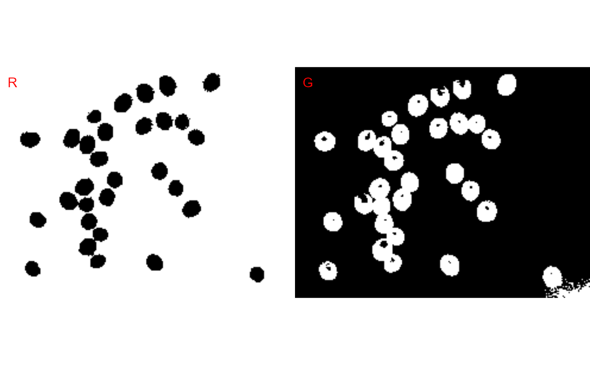

image_binary.RdReduce a color, color near-infrared, or grayscale images to a binary image using a given color channel (red, green blue) or even color indexes. The Otsu's thresholding method (Otsu, 1979) is used to automatically perform clustering-based image thresholding.
image_binary( image, index = NULL, my_index = NULL, resize = TRUE, fill_hull = FALSE, re = NULL, nir = NULL, invert = FALSE, show_image = TRUE, nrow = NULL, ncol = NULL, parallel = FALSE, workers = NULL, verbose = TRUE )
| image | An image object. |
|---|---|
| index | A character value (or a vector of characters) specifying the
target mode for conversion to binary image. One of the following: |
| my_index | User can calculate a diferent index using the bands names,
e.g. |
| resize | Resize the image before processing? Defaults to |
| fill_hull | Fill holes in the objects? Defaults to |
| re | Respective position of the red-edge band at the original image file. |
| nir | Respective position of the near-infrared band at the original image file. |
| invert | Inverts the binary image, if desired. |
| show_image | Show image after processing? |
| nrow, ncol | The number of rows or columns in the plot grid. Defaults to
|
| parallel | Processes the images asynchronously (in parallel) in separate
R sessions running in the background on the same machine. It may speed up
the processing time when |
| workers | A positive numeric scalar or a function specifying the maximum number of parallel processes that can be active at the same time. |
| verbose | If |
A list containing binary images. The length will depend on the number of indexes used.
Nobuyuki Otsu, "A threshold selection method from gray-level histograms". IEEE Trans. Sys., Man., Cyber. 9 (1): 62-66. 1979. doi: 10.1109/TSMC.1979.4310076
Tiago Olivoto tiagoolivoto@gmail.com
library(pliman) img <- image_import(image_pliman("soybean_touch.jpg")) image_binary(img, index = c("R, NR"), nrow = 1)